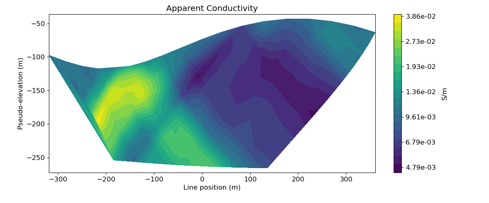
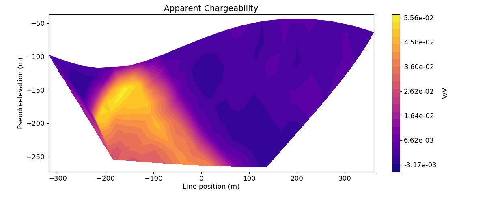
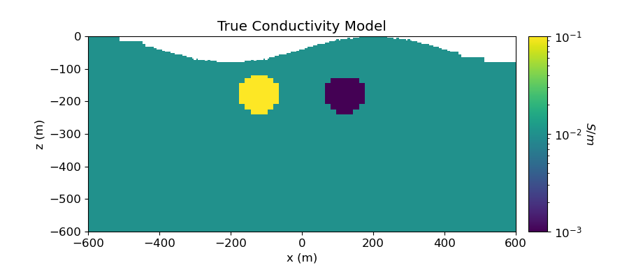
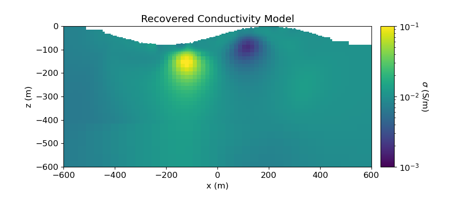
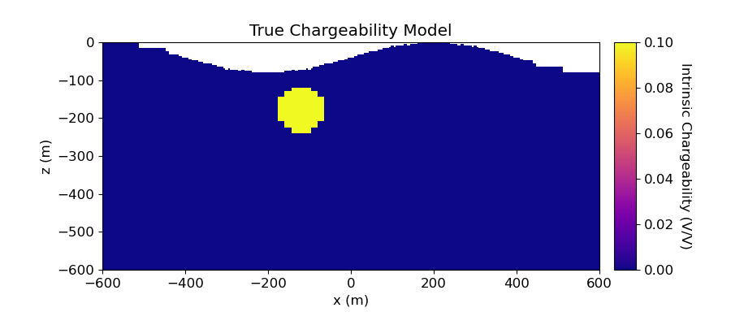
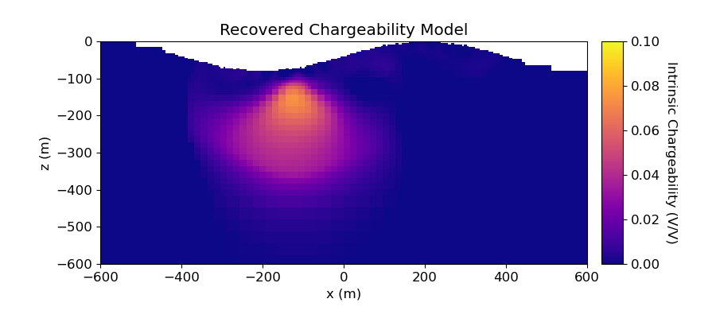

Note
Go to the end to download the full example code
2.5D DC Resistivity and IP Least-Squares Inversion#
Here we invert a line of DC resistivity and induced polarization data to recover electrical conductivity and chargeability models, respectively. We formulate the corresponding inverse problems as least-squares optimization problems. For this tutorial, we focus on the following:
Defining the survey
Generating a mesh based on survey geometry
Including surface topography
Defining the inverse problem (data misfit, regularization, directives)
Applying sensitivity weighting
Plotting the recovered model and data misfit
The DC data are measured voltages and the IP data are defined as secondary potentials.
Import modules#
import os
import numpy as np
import matplotlib as mpl
import matplotlib.pyplot as plt
from matplotlib.colors import LogNorm
import tarfile
from discretize import TreeMesh
from discretize.utils import mkvc, refine_tree_xyz, active_from_xyz
from SimPEG.utils import model_builder
from SimPEG import (
maps,
data_misfit,
regularization,
optimization,
inverse_problem,
inversion,
directives,
utils,
)
from SimPEG.electromagnetics.static import resistivity as dc
from SimPEG.electromagnetics.static import induced_polarization as ip
from SimPEG.electromagnetics.static.utils.static_utils import (
apparent_resistivity_from_voltage,
plot_pseudosection,
)
from SimPEG.utils.io_utils.io_utils_electromagnetics import read_dcip2d_ubc
try:
from pymatsolver import Pardiso as Solver
except ImportError:
from SimPEG import SolverLU as Solver
mpl.rcParams.update({"font.size": 16})
# sphinx_gallery_thumbnail_number = 7
Define File Names#
Here we provide the file paths to assets we need to run the inversion. The path to the true model conductivity and chargeability models are also provided for comparison with the inversion results. These files are stored as a tar-file on our google cloud bucket: “https://storage.googleapis.com/simpeg/doc-assets/dcip2d.tar.gz”
# storage bucket where we have the data
data_source = "https://storage.googleapis.com/simpeg/doc-assets/dcip2d.tar.gz"
# download the data
downloaded_data = utils.download(data_source, overwrite=True)
# unzip the tarfile
tar = tarfile.open(downloaded_data, "r")
tar.extractall()
tar.close()
# path to the directory containing our data
dir_path = downloaded_data.split(".")[0] + os.path.sep
# files to work with
topo_filename = dir_path + "topo_xyz.txt"
dc_data_filename = dir_path + "dc_data.obs"
ip_data_filename = dir_path + "ip_data.obs"
Downloading https://storage.googleapis.com/simpeg/doc-assets/dcip2d.tar.gz
saved to: /home/vsts/work/1/s/tutorials/06-ip/dcip2d.tar.gz
Download completed!
Load Data, Define Survey and Plot#
Here we load the observed data, define the DC and IP survey geometry and plot the data values using pseudo-sections.
# Load data
topo_xyz = np.loadtxt(str(topo_filename))
dc_data = read_dcip2d_ubc(dc_data_filename, "volt", "general")
ip_data = read_dcip2d_ubc(ip_data_filename, "apparent_chargeability", "general")
Plot Observed Data in Pseudosection#
# Plot apparent conductivity using pseudo-section
mpl.rcParams.update({"font.size": 12})
apparent_conductivities = 1 / apparent_resistivity_from_voltage(
dc_data.survey, dc_data.dobs
)
# Plot apparent conductivity pseudo-section
fig = plt.figure(figsize=(12, 5))
ax1 = fig.add_axes([0.1, 0.15, 0.75, 0.78])
plot_pseudosection(
dc_data.survey,
apparent_conductivities,
"contourf",
ax=ax1,
scale="log",
cbar_label="S/m",
mask_topography=True,
contourf_opts={"levels": 20, "cmap": mpl.cm.viridis},
)
ax1.set_title("Apparent Conductivity")
plt.show()
# Plot apparent chargeability in pseudo-section
apparent_chargeability = ip_data.dobs
fig = plt.figure(figsize=(12, 5))
ax1 = fig.add_axes([0.1, 0.15, 0.75, 0.78])
plot_pseudosection(
ip_data.survey,
apparent_chargeability,
"contourf",
ax=ax1,
scale="linear",
cbar_label="V/V",
mask_topography=True,
contourf_opts={"levels": 20, "cmap": mpl.cm.plasma},
)
ax1.set_title("Apparent Chargeability")
plt.show()
- 
- 
Assign Uncertainties#
Inversion with SimPEG requires that we define the uncertainties on our data. This represents our estimate of the standard deviation of the noise in our data. For DC data, the uncertainties are 5% of the absolute value. For appanrent chargeability IP data, the uncertainties are 5e-3 V/V.
dc_data.standard_deviation = 0.05 * np.abs(dc_data.dobs)
ip_data.standard_deviation = 5e-3 * np.ones_like(ip_data.dobs)
Create Tree Mesh#
Here, we create the Tree mesh that will be used to invert both DC resistivity and IP data.
dh = 4 # base cell width
dom_width_x = 3200.0 # domain width x
dom_width_z = 2400.0 # domain width z
nbcx = 2 ** int(np.round(np.log(dom_width_x / dh) / np.log(2.0))) # num. base cells x
nbcz = 2 ** int(np.round(np.log(dom_width_z / dh) / np.log(2.0))) # num. base cells z
# Define the base mesh
hx = [(dh, nbcx)]
hz = [(dh, nbcz)]
mesh = TreeMesh([hx, hz], x0="CN")
# Mesh refinement based on topography
mesh = refine_tree_xyz(
mesh,
topo_xyz[:, [0, 2]],
octree_levels=[0, 0, 4, 4],
method="surface",
finalize=False,
)
# Mesh refinement near transmitters and receivers. First we need to obtain the
# set of unique electrode locations.
electrode_locations = np.c_[
dc_data.survey.locations_a,
dc_data.survey.locations_b,
dc_data.survey.locations_m,
dc_data.survey.locations_n,
]
unique_locations = np.unique(
np.reshape(electrode_locations, (4 * dc_data.survey.nD, 2)), axis=0
)
mesh = refine_tree_xyz(
mesh, unique_locations, octree_levels=[4, 4], method="radial", finalize=False
)
# Refine core mesh region
xp, zp = np.meshgrid([-600.0, 600.0], [-400.0, 0.0])
xyz = np.c_[mkvc(xp), mkvc(zp)]
mesh = refine_tree_xyz(
mesh, xyz, octree_levels=[0, 0, 2, 8], method="box", finalize=False
)
mesh.finalize()
/home/vsts/conda/envs/simpeg-test/lib/python3.8/site-packages/scipy/interpolate/_interpolate.py:698: RuntimeWarning:
invalid value encountered in divide
Project Surveys to Discretized Topography#
It is important that electrodes are not modeled as being in the air. Even if the electrodes are properly located along surface topography, they may lie above the discretized topography. This step is carried out to ensure all electrodes lie on the discretized surface.
# Create 2D topography. Since our 3D topography only changes in the x direction,
# it is easy to define the 2D topography projected along the survey line. For
# arbitrary topography and for an arbitrary survey orientation, the user must
# define the 2D topography along the survey line.
topo_2d = np.unique(topo_xyz[:, [0, 2]], axis=0)
# Find cells that lie below surface topography
ind_active = active_from_xyz(mesh, topo_2d)
# Extract survey from data object
dc_survey = dc_data.survey
ip_survey = ip_data.survey
# Shift electrodes to the surface of discretized topography
dc_survey.drape_electrodes_on_topography(mesh, ind_active, option="top")
ip_survey.drape_electrodes_on_topography(mesh, ind_active, option="top")
# Reset survey in data object
dc_data.survey = dc_survey
ip_data.survey = ip_survey
Starting/Reference Model and Mapping on OcTree Mesh#
Here, we would create starting and/or reference models for the DC inversion as well as the mapping from the model space to the active cells. Starting and reference models can be a constant background value or contain a-priori structures. Here, the starting model is the natural log of 0.01 S/m.
# Define conductivity model in S/m (or resistivity model in Ohm m)
air_conductivity = np.log(1e-8)
background_conductivity = np.log(1e-2)
active_map = maps.InjectActiveCells(mesh, ind_active, np.exp(air_conductivity))
nC = int(ind_active.sum())
conductivity_map = active_map * maps.ExpMap()
# Define model
starting_conductivity_model = background_conductivity * np.ones(nC)
Define the Physics of the DC Simulation#
Here, we define the physics of the DC resistivity problem.
# Define the problem. Define the cells below topography and the mapping
dc_simulation = dc.Simulation2DNodal(
mesh, survey=dc_survey, sigmaMap=conductivity_map, solver=Solver, storeJ=True
)
Define DC Inverse Problem#
The inverse problem is defined by 3 things:
Data Misfit: a measure of how well our recovered model explains the field data
Regularization: constraints placed on the recovered model and a priori information
Optimization: the numerical approach used to solve the inverse problem
# Define the data misfit. Here the data misfit is the L2 norm of the weighted
# residual between the observed data and the data predicted for a given model.
# Within the data misfit, the residual between predicted and observed data are
# normalized by the data's standard deviation.
dc_data_misfit = data_misfit.L2DataMisfit(data=dc_data, simulation=dc_simulation)
# Define the regularization (model objective function)
dc_regularization = regularization.WeightedLeastSquares(
mesh,
indActive=ind_active,
reference_model=starting_conductivity_model,
alpha_s=0.01,
alpha_x=1,
alpha_y=1,
)
# Define how the optimization problem is solved. Here we will use an inexact
# Gauss-Newton approach.
dc_optimization = optimization.InexactGaussNewton(maxIter=40)
# Here we define the inverse problem that is to be solved
dc_inverse_problem = inverse_problem.BaseInvProblem(
dc_data_misfit, dc_regularization, dc_optimization
)
Define DC Inversion Directives#
Here we define any directives that are carried out during the inversion. This includes the cooling schedule for the trade-off parameter (beta), stopping criteria for the inversion and saving inversion results at each iteration.
# Apply and update sensitivity weighting as the model updates
update_sensitivity_weighting = directives.UpdateSensitivityWeights()
# Defining a starting value for the trade-off parameter (beta) between the data
# misfit and the regularization.
starting_beta = directives.BetaEstimate_ByEig(beta0_ratio=1e1)
# Set the rate of reduction in trade-off parameter (beta) each time the
# the inverse problem is solved. And set the number of Gauss-Newton iterations
# for each trade-off paramter value.
beta_schedule = directives.BetaSchedule(coolingFactor=3, coolingRate=2)
# Options for outputting recovered models and predicted data for each beta.
save_iteration = directives.SaveOutputEveryIteration(save_txt=False)
# Setting a stopping criteria for the inversion.
target_misfit = directives.TargetMisfit(chifact=1)
# Update preconditioner
update_jacobi = directives.UpdatePreconditioner()
directives_list = [
update_sensitivity_weighting,
starting_beta,
beta_schedule,
save_iteration,
target_misfit,
update_jacobi,
]
Running the DC Inversion#
To define the inversion object, we need to define the inversion problem and the set of directives. We can then run the inversion.
# Here we combine the inverse problem and the set of directives
dc_inversion = inversion.BaseInversion(
dc_inverse_problem, directiveList=directives_list
)
# Run inversion
recovered_conductivity_model = dc_inversion.run(starting_conductivity_model)
SimPEG.InvProblem is setting bfgsH0 to the inverse of the eval2Deriv.
***Done using same Solver, and solver_opts as the Simulation2DNodal problem***
model has any nan: 0
============================ Inexact Gauss Newton ============================
# beta phi_d phi_m f |proj(x-g)-x| LS Comment
-----------------------------------------------------------------------------
x0 has any nan: 0
0 1.72e+03 1.71e+04 0.00e+00 1.71e+04 3.26e+03 0
1 1.72e+03 2.39e+03 1.52e+00 5.00e+03 2.49e+02 0
2 5.73e+02 2.05e+03 1.64e+00 2.99e+03 4.31e+02 0 Skip BFGS
3 5.73e+02 6.67e+02 3.02e+00 2.40e+03 4.41e+01 0
4 1.91e+02 6.79e+02 2.98e+00 1.25e+03 2.05e+02 0
5 1.91e+02 1.88e+02 4.38e+00 1.02e+03 2.18e+01 0
6 6.36e+01 1.88e+02 4.35e+00 4.65e+02 8.56e+01 0
------------------------- STOP! -------------------------
1 : |fc-fOld| = 0.0000e+00 <= tolF*(1+|f0|) = 1.7139e+03
1 : |xc-x_last| = 4.8026e+00 <= tolX*(1+|x0|) = 3.1119e+01
0 : |proj(x-g)-x| = 8.5564e+01 <= tolG = 1.0000e-01
0 : |proj(x-g)-x| = 8.5564e+01 <= 1e3*eps = 1.0000e-02
0 : maxIter = 40 <= iter = 7
------------------------- DONE! -------------------------
Plotting True and Recovered Conductivity Model#
# Recreate true conductivity model
true_background_conductivity = 1e-2
true_conductor_conductivity = 1e-1
true_resistor_conductivity = 1e-3
true_conductivity_model = true_background_conductivity * np.ones(len(mesh))
ind_conductor = model_builder.getIndicesSphere(np.r_[-120.0, -180.0], 60.0, mesh.gridCC)
true_conductivity_model[ind_conductor] = true_conductor_conductivity
ind_resistor = model_builder.getIndicesSphere(np.r_[120.0, -180.0], 60.0, mesh.gridCC)
true_conductivity_model[ind_resistor] = true_resistor_conductivity
true_conductivity_model[~ind_active] = np.NaN
# Plot True Model
norm = LogNorm(vmin=1e-3, vmax=1e-1)
fig = plt.figure(figsize=(9, 4))
ax1 = fig.add_axes([0.14, 0.17, 0.68, 0.7])
im = mesh.plot_image(
true_conductivity_model, ax=ax1, grid=False, pcolor_opts={"norm": norm}
)
ax1.set_xlim(-600, 600)
ax1.set_ylim(-600, 0)
ax1.set_title("True Conductivity Model")
ax1.set_xlabel("x (m)")
ax1.set_ylabel("z (m)")
ax2 = fig.add_axes([0.84, 0.17, 0.03, 0.7])
cbar = mpl.colorbar.ColorbarBase(ax2, norm=norm, orientation="vertical")
cbar.set_label("$S/m$", rotation=270, labelpad=15, size=12)
plt.show()
# Plot Recovered Model
fig = plt.figure(figsize=(9, 4))
recovered_conductivity = conductivity_map * recovered_conductivity_model
recovered_conductivity[~ind_active] = np.NaN
ax1 = fig.add_axes([0.14, 0.17, 0.68, 0.7])
mesh.plot_image(
recovered_conductivity, normal="Y", ax=ax1, grid=False, pcolor_opts={"norm": norm}
)
ax1.set_xlim(-600, 600)
ax1.set_ylim(-600, 0)
ax1.set_title("Recovered Conductivity Model")
ax1.set_xlabel("x (m)")
ax1.set_ylabel("z (m)")
ax2 = fig.add_axes([0.84, 0.17, 0.03, 0.7])
cbar = mpl.colorbar.ColorbarBase(ax2, norm=norm, orientation="vertical")
cbar.set_label(r"$\sigma$ (S/m)", rotation=270, labelpad=15, size=12)
plt.show()
- 
- 
Plotting Predicted DC Data and Misfit#
# Predicted data from recovered model
dpred_dc = dc_inverse_problem.dpred
dobs_dc = dc_data.dobs
std_dc = dc_data.standard_deviation
# Plot
fig = plt.figure(figsize=(9, 15))
data_array = [np.abs(dobs_dc), np.abs(dpred_dc), (dobs_dc - dpred_dc) / std_dc]
plot_title = ["Observed", "Predicted", "Normalized Misfit"]
plot_units = ["S/m", "S/m", ""]
scale = ["log", "log", "linear"]
ax1 = 3 * [None]
cax1 = 3 * [None]
cbar = 3 * [None]
cplot = 3 * [None]
for ii in range(0, 3):
ax1[ii] = fig.add_axes([0.1, 0.70 - 0.33 * ii, 0.7, 0.23])
cax1[ii] = fig.add_axes([0.83, 0.70 - 0.33 * ii, 0.05, 0.23])
cplot[ii] = plot_pseudosection(
dc_data.survey,
data_array[ii],
"contourf",
ax=ax1[ii],
cax=cax1[ii],
scale=scale[ii],
cbar_label=plot_units[ii],
mask_topography=True,
contourf_opts={"levels": 25, "cmap": mpl.cm.viridis},
)
ax1[ii].set_title(plot_title[ii])
plt.show()
Starting/Reference Model for IP Inversion#
Here, we would create starting and/or reference models for the IP inversion as well as the mapping from the model space to the active cells. Starting and reference models can be a constant background value or contain a-priori structures. Here, the starting model is the 1e-6 V/V.
# Define conductivity model in S/m (or resistivity model in Ohm m)
air_chargeability = 0.0
background_chargeability = 1e-6
active_map = maps.InjectActiveCells(mesh, ind_active, air_chargeability)
nC = int(ind_active.sum())
chargeability_map = active_map
# Define model
starting_chargeability_model = background_chargeability * np.ones(nC)
Define the Physics of the IP Simulation#
Here, we define the physics of the IP problem. For the chargeability, we require a mapping from the model space to the entire mesh. For the background conductivity/resistivity, we require the conductivity/resistivity on the entire mesh.
ip_simulation = ip.Simulation2DNodal(
mesh,
survey=ip_survey,
etaMap=chargeability_map,
sigma=conductivity_map * recovered_conductivity_model,
solver=Solver,
storeJ=True,
)
Define IP Inverse Problem#
Here we define the inverse problem in the same manner as the DC inverse problem.
# Define the data misfit (Here we use weighted L2-norm)
ip_data_misfit = data_misfit.L2DataMisfit(data=ip_data, simulation=ip_simulation)
# Define the regularization (model objective function)
ip_regularization = regularization.WeightedLeastSquares(
mesh,
indActive=ind_active,
mapping=maps.IdentityMap(nP=nC),
alpha_s=0.01,
alpha_x=1,
alpha_y=1,
)
# Define how the optimization problem is solved. Here it is a projected
# Gauss Newton with Conjugate Gradient solver.
ip_optimization = optimization.ProjectedGNCG(
maxIter=15, lower=0.0, upper=1000.0, maxIterCG=30, tolCG=1e-2
)
# Here we define the inverse problem that is to be solved
ip_inverse_problem = inverse_problem.BaseInvProblem(
ip_data_misfit, ip_regularization, ip_optimization
)
Define IP Inversion Directives#
Here we define the directives in the same manner as the DC inverse problem.
update_sensitivity_weighting = directives.UpdateSensitivityWeights(threshold=1e-3)
starting_beta = directives.BetaEstimate_ByEig(beta0_ratio=1e1)
beta_schedule = directives.BetaSchedule(coolingFactor=2, coolingRate=1)
save_iteration = directives.SaveOutputEveryIteration(save_txt=False)
target_misfit = directives.TargetMisfit(chifact=1.0)
update_jacobi = directives.UpdatePreconditioner()
directives_list = [
update_sensitivity_weighting,
starting_beta,
beta_schedule,
save_iteration,
target_misfit,
update_jacobi,
]
/home/vsts/work/1/s/SimPEG/directives/directives.py:2526: UserWarning:
'threshold' property is deprecated and will be removed in SimPEG 0.20.0.Please use 'threshold_value'.
Running the IP Inversion#
Here we define the directives in the same manner as the DC inverse problem.
# Here we combine the inverse problem and the set of directives
ip_inversion = inversion.BaseInversion(
ip_inverse_problem, directiveList=directives_list
)
# Run inversion
recovered_chargeability_model = ip_inversion.run(starting_chargeability_model)
SimPEG.InvProblem will set Regularization.reference_model to m0.
SimPEG.InvProblem will set Regularization.reference_model to m0.
SimPEG.InvProblem will set Regularization.reference_model to m0.
SimPEG.InvProblem will set Regularization.reference_model to m0.
SimPEG.InvProblem will set Regularization.reference_model to m0.
SimPEG.InvProblem is setting bfgsH0 to the inverse of the eval2Deriv.
***Done using same Solver, and solver_opts as the Simulation2DNodal problem***
model has any nan: 0
=============================== Projected GNCG ===============================
# beta phi_d phi_m f |proj(x-g)-x| LS Comment
-----------------------------------------------------------------------------
x0 has any nan: 0
0 4.62e+04 1.73e+03 0.00e+00 1.73e+03 5.40e+03 0
1 2.31e+04 1.07e+02 4.50e-03 2.11e+02 7.18e+02 0
------------------------- STOP! -------------------------
1 : |fc-fOld| = 0.0000e+00 <= tolF*(1+|f0|) = 1.7288e+02
0 : |xc-x_last| = 1.3017e-01 <= tolX*(1+|x0|) = 1.0001e-01
0 : |proj(x-g)-x| = 7.1799e+02 <= tolG = 1.0000e-01
0 : |proj(x-g)-x| = 7.1799e+02 <= 1e3*eps = 1.0000e-02
0 : maxIter = 15 <= iter = 2
------------------------- DONE! -------------------------
Plotting True Model and Recovered Chargeability Model#
sphere_chargeability = 1e-1
true_chargeability_model = np.zeros(len(mesh))
true_chargeability_model[ind_conductor] = sphere_chargeability
true_chargeability_model[~ind_active] = np.NaN
recovered_chargeability = chargeability_map * recovered_chargeability_model
recovered_chargeability[~ind_active] = np.NaN
# Plot True Model
fig = plt.figure(figsize=(9, 4))
norm = mpl.colors.Normalize(vmin=0, vmax=sphere_chargeability)
ax1 = fig.add_axes([0.14, 0.17, 0.68, 0.7])
mesh.plot_image(
true_chargeability_model,
ax=ax1,
grid=False,
pcolor_opts={"cmap": "plasma", "norm": norm},
)
ax1.set_xlim(-600, 600)
ax1.set_ylim(-600, 0)
ax1.set_title("True Chargeability Model")
ax1.set_xlabel("x (m)")
ax1.set_ylabel("z (m)")
ax2 = fig.add_axes([0.84, 0.17, 0.03, 0.7])
cbar = mpl.colorbar.ColorbarBase(
ax2, norm=norm, orientation="vertical", cmap=mpl.cm.plasma
)
cbar.set_label("Intrinsic Chargeability (V/V)", rotation=270, labelpad=15, size=12)
plt.show()
# Plot Recovered Model
fig = plt.figure(figsize=(9, 4))
ax1 = fig.add_axes([0.14, 0.17, 0.68, 0.7])
mesh.plot_image(
recovered_chargeability,
normal="Y",
ax=ax1,
grid=False,
pcolor_opts={"cmap": "plasma", "norm": norm},
)
ax1.set_xlim(-600, 600)
ax1.set_ylim(-600, 0)
ax1.set_title("Recovered Chargeability Model")
ax1.set_xlabel("x (m)")
ax1.set_ylabel("z (m)")
ax2 = fig.add_axes([0.84, 0.17, 0.03, 0.7])
cbar = mpl.colorbar.ColorbarBase(
ax2, norm=norm, orientation="vertical", cmap=mpl.cm.plasma
)
cbar.set_label("Intrinsic Chargeability (V/V)", rotation=270, labelpad=15, size=12)
plt.show()
- 
- 
Plotting Predicted Data and Misfit#
dpred_ip = ip_inverse_problem.dpred
dobs_ip = ip_data.dobs
std_ip = ip_data.standard_deviation
# Plot
fig = plt.figure(figsize=(9, 13))
data_array = [dobs_ip, dpred_ip, (dobs_ip - dpred_ip) / std_ip]
plot_title = [
"Observed (as app. chg.)",
"Predicted (as app. chg.)",
"Normalized Misfit",
]
plot_units = ["V/V", "V/V", ""]
ax1 = 3 * [None]
cax1 = 3 * [None]
cbar = 3 * [None]
cplot = 3 * [None]
for ii in range(0, 3):
ax1[ii] = fig.add_axes([0.15, 0.72 - 0.33 * ii, 0.65, 0.21])
cax1[ii] = fig.add_axes([0.81, 0.72 - 0.33 * ii, 0.03, 0.21])
cplot[ii] = plot_pseudosection(
ip_data.survey,
data_array[ii],
"contourf",
ax=ax1[ii],
cax=cax1[ii],
scale="linear",
cbar_label=plot_units[ii],
mask_topography=True,
contourf_opts={"levels": 25, "cmap": mpl.cm.plasma},
)
ax1[ii].set_title(plot_title[ii])
plt.show()
Total running time of the script: ( 1 minutes 8.971 seconds)
Estimated memory usage: 17 MB